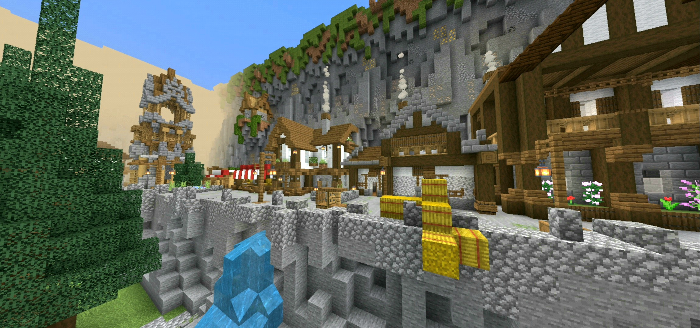

Welcome to Alpha Networks home page! From here you can find links to our realms and ark servers. Also our studio content from Alpha Studios can be found and downloaded!
Factions is one of the most popular kinds of Minecraft games available today, and it is easy to see why. It expands on the original Minecraft survival experience by including a few essential plugins and improvements. Factions is not a game for the faint of heart. At its heart, it is a multiplayer online battle arena game. There's also OP Factions, which adds enchantments and other features to the game that aren't included in the basic game. The primary goal of Factions is to form a powerful team (referred to as a "Faction"), claim territory, construct bases, and begin attacking other bases. In Factions, raiding is a fundamental concept. Construction of cannons to knock down fortifications, PvP, and plundering the wealth you discover will make for an entertaining
ALPHA FACTIONS
-Active Staff
-Events
-Bosses
-The nether
-Shop
-Level system
-Prestige system
-Kits
-Crates
-Custom gui
Come join the growing community of ALPHA NETWORK with over 1500 club members and many active staff
Alpha KitPvP: 
With Kit PVP, you may play one of the most popular Minecraft gamemodes online for free. In addition, the realm is ideal for PvP battles (PVP). Your unique items will be added to a pre-set category of the Kit. Prepare to battle your friends and other players in Minecraft to see who will win. Each person who enters a Minecraft world has one goal: to get points. The Best Minecraft KitPvP Realms List was created to let players choose their favorite from the list. Play against other players to get reputation and points. The Kit PVP game may be easy if you utilize the best worlds accessible. Use the best strategies and methods to win. To increase your chances of earning more points faster, you must get acquainted with the Minecraft KitPvP world that you want to use.